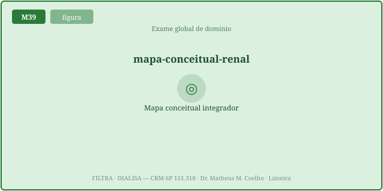
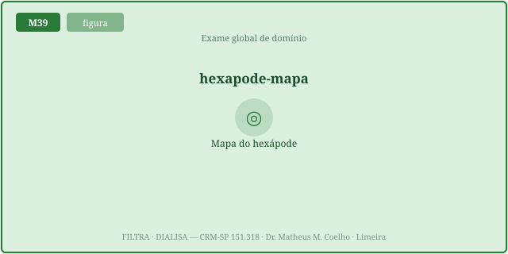
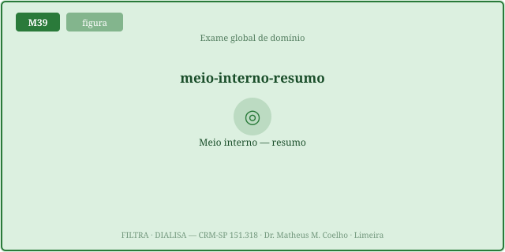
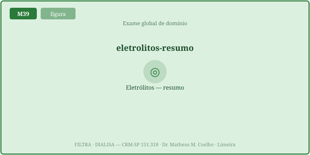
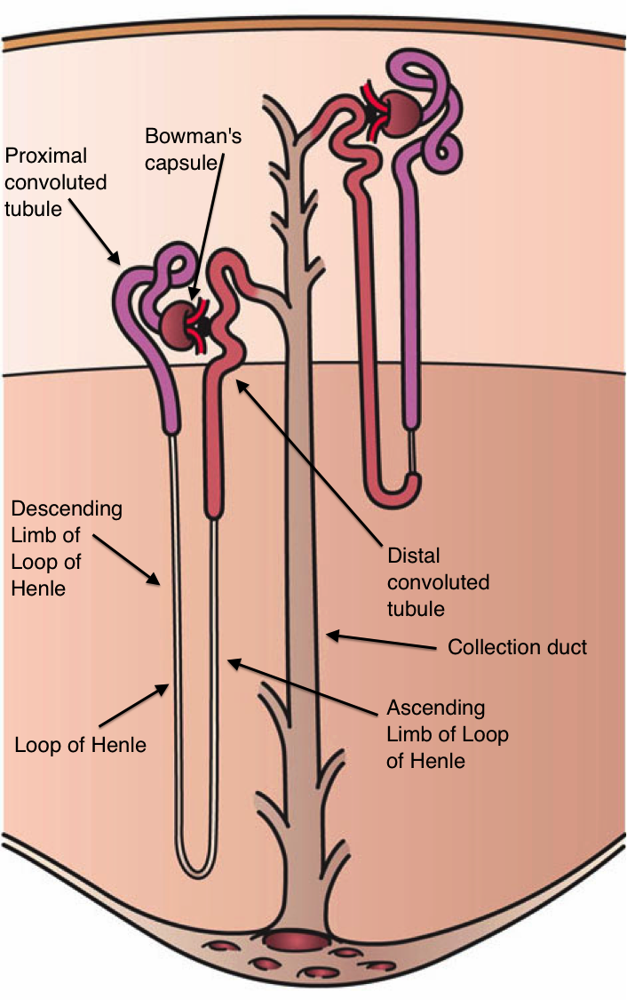
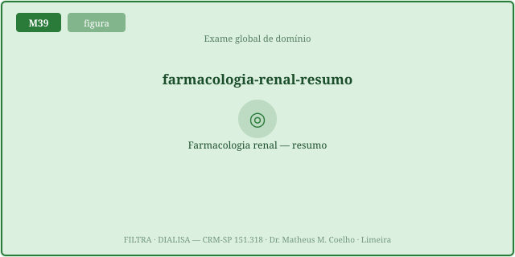
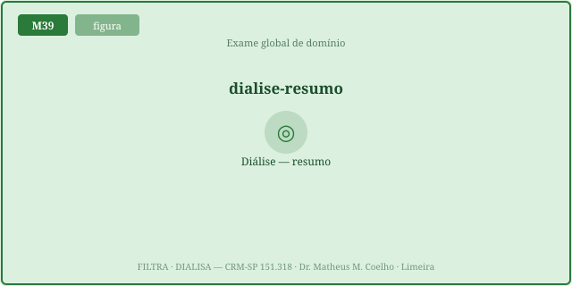

Um exame de domínio não mede "quanto você sabe" num número só — mede
ONDE você sabe. O escore total é uma sombra; a psicometria (dificuldade, discriminação,
confiabilidade) e o perfil por domínio dizem se a prova é boa e onde está a lacuna. É a mesma
homeostasia do braço inteiro, aplicada ao raciocínio: defender o meio interno do paciente exige que
cada domínio esteja firme. As Fig. 1–8 voltam no Caso, na Trilha e na Avaliação. Atribuição em
CREDITS.md (em curadoria).
As 100 questões cobrem dez blocos curriculares, de FILTRA (compartimentos → glomérulo → túbulo → eletrólitos/ácido-base → RAAS → LRA) a DIALISA (princípios → HDI → TRRC → indicação/integração). O exame é balanceado: ~10 itens por domínio, para que o perfil seja interpretável.


A nota = Σ acertos; a fração = nota / nº de itens ∈ [0,1]. O corte
(passa-rasante, p.ex. 60%) separa aprovado de reprovado. O motor (gradeExam) computa tudo;
respostas faltando contam como erro, excedentes são ignoradas — robustez antes de aparência.


A dificuldade p = fração da coorte que acerta o item (paradoxo do nome: p
alto = item fácil). Itens muito fáceis (p≈1) ou muito difíceis (p≈0) discriminam pouco; o ideal fica em
torno de 0,3–0,8. O motor (itemDifficulty) computa p de uma matriz coorte × itens.


A discriminação (ponto-bisserial) mede se quem acerta o item tende a ter escore total alto — itens que separam fortes de fracos. A confiabilidade KR-20 resume a consistência interna do teste (0–1): sobe quando os itens "puxam para o mesmo lado" numa coorte heterogênea. Um item que todos acertam tem discriminação ≈0 — não separa ninguém.

Como usar este módulo: faça as 100 questões na aba Avaliação (bloco "Exame 100"); o Instrumento pinta o seu perfil por domínio ao vivo; o Lab simula coortes e mostra como dificuldade, discriminação e KR-20 se movem. O alvo não é o número — é ver onde reforçar.
Não é um paciente: é o seu próprio exame. Uma turma fez as 100 questões; vamos ler o boletim como um clínico lê um meio interno — decompondo antes de interpretar (Fig. 1, 3).
pontoFraco = 'TRRC/contínuas'. domainBreakdown
calcula acertos/total por domínio e aponta o menor — aqui, a dose em mL/kg/h e pré/pós-diluição. A
recapitulação volta a M27–M28. O número global escondia exatamente o que importa.d≈0.Mede um agregado, mas é uma sombra. Dois alunos com a mesma nota podem ter perfis opostos. O que ensina é o perfil por domínio (Fig. 1) — onde a lacuna está.
Fração = acertos / nº de itens ∈ [0,1]. O corte
(passa-rasante) é o limiar de aprovação. gradeExam computa ambos; corte mais alto nunca
facilita a aprovação.
Para o perfil ser interpretável: poucos itens por bloco dão estimativas instáveis. Balancear os domínios (~10 cada) deixa o perfil por domínio comparável entre blocos.
Não — é o paradoxo do nome. p = fração que acerta; p alto = item fácil. O útil para medir fica em ~0,3–0,8 (Fig. 5–6); p≈1 ou p≈0 quase não discrimina.
Se quem acerta o item tende a ter escore total alto (ponto-bisserial). Item que separa fortes de fracos discrimina; item que todos acertam (ou erram) tem discriminação ≈0.
A confiabilidade de consistência interna para itens dicotômicos: KR-20 = (k/(k−1))·(1 − Σp·q / var_total) ∈ [0,1]. Quanto mais os itens concordam numa coorte heterogênea, maior.
Porque depende da variância de escore. Se todos acertam quase tudo, a variância tende a 0 e o KR-20 cai — mesmo com bons itens. É a coorte, não a prova.
domainBreakdown dá
acertos/total por bloco e aponta o pontoFraco. Você volta ao módulo daquele domínio (p.ex. lacuna em
TRRC → M27–M28).
No domínio Indicação/integração: cardiorrenal, hepatorrenal, volume × Guyton (CHOCA), ácido-base × ventilação. O exame cobra o sistema, não só o néfron (Fig. 2).
Dificuldade intermediária, discriminação positiva e contribuição ao KR-20. Um item trivial (p≈1) ou ambíguo (discriminação ≤0) é candidato a revisão — a psicometria expõe isso.
O exame defende a integridade do raciocínio: cada domínio firme = o aluno consegue defender o meio interno do paciente em qualquer eixo. A lacuna num domínio é uma falência local — corrige-se no mecanismo, não decorando o número.
As barras são o percentual de acertos por domínio computado por
scoreProfileLayout(domainBreakdown(…)); a linha pontilhada é o corte. À medida que você
responde o Exame 100 (aba Avaliação) ou move os controles do Lab, o perfil se redesenha. A barra
mais baixa é o seu ponto fraco — onde a recapitulação rende mais.
Gere um aluno-alvo (perfil de habilidade por domínio) e uma coorte; veja a nota, o perfil, a dificuldade média, a discriminação e o KR-20 — tudo computado pelo motor.
| Saída | Atual | Comentário |
|---|---|---|
| Nota do aluno (de 100) | — | Σ acertos |
| Fração / percentual | — | acertos / itens |
| Aprovado? | — | fração ≥ corte |
| Ponto fraco (domínio) | — | menor % por bloco |
| Dificuldade média da prova (p) | — | 1 = fácil p/ a coorte |
| Discriminação média | — | ponto-bisserial |
| Confiabilidade (KR-20) | — | consistência interna |
Responda; o perfil por domínio (aba Instrumento) e a nota são computados pelo motor ao vivo. Cada questão traz seu domínio e a explicação ao confirmar.